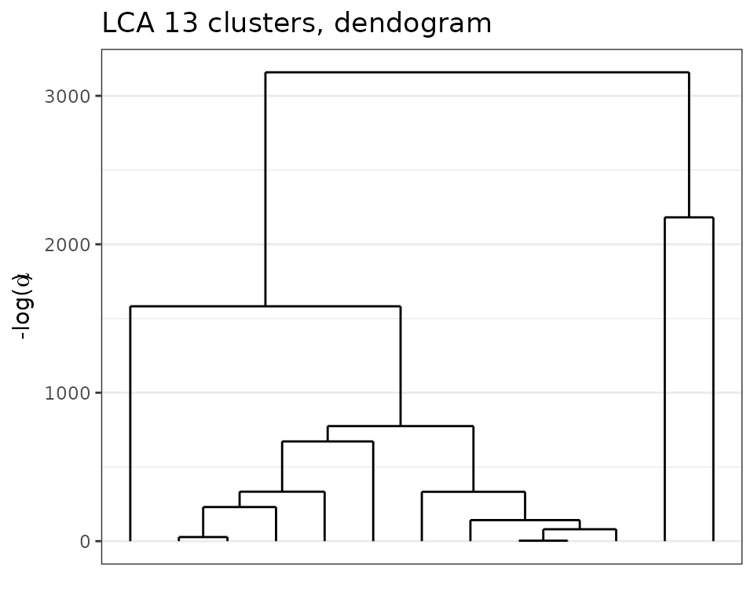

Loads the necessary packages for the vignettes.
library(future) # allows parralel processing in greed()
plan(multisession)
library(greed)
library(dplyr)
library(tidyr)
library(ggpubr)
library(ggplot2)
library(aricode)
library(careless) # string processing
set.seed(1234)The greed package and DLVM framework allows the clustering of categorical data. This vignette describes typical use cases of the greed() function in this context, and illustrates its use on real datasets.
We are interested in the clustering of categorical datasets, which are typically found in survey data or item response theory (ITR). In this context, we observe \(n\) individuals described by \(p\) variables, taking one among \(d_j\) modalities for each variable \(j\). Such datasets are typically represented using a one-hot-encoding of each factor in a design matrix \(\mathbf{X} \in \{0,1\}^{n \times d}\) where \(d = \sum_{j=1}^p d_j\). Latent class analysis (LCA) is a generative model for categorical data clustering which posits conditional independance of the factor variables conditionally on the (unknown) partition. Below is a description of its Bayesian formulation with the use of proper conjugate priors \[ \begin{equation} \begin{aligned} \pi&\sim \textrm{Dirichlet}(\alpha),\\ \forall k, \forall j, \quad \theta_{kj} &\sim \textrm{Dirichlet}_{d_j}(\beta), \\ Z_i&\sim \mathcal{M}_K(1,\pi),\\ \forall j=1, \ldots, p, \quad X_{ij}|Z_{ik}=1 &\sim \mathcal{M}_{d_j}(1, \theta_{kj}),\\ \end{aligned} \end{equation} \] For each cluster \(k\) and variable \(j\), the vector \(\theta_{kj}\) represents the probability of each of the \(d_j\) modalities. With the choice of priors above, the LCA model admits an exact ICL expression similar to the mixture of multinomials derived here (Section 3) .
We now illustrate the use of the greed package on two real datasets:
The data are imported by the greed package.
data("mushroom")We begin by forming the necessary vectors for analysis. The data has \(n=8124\) rows and \(p=23\) columns. The first column contains the poisonous status of each mushroom with two possible values, “p” for “poisonous” and “e” for edible, it will serve as the clustering we seek to recover. The remaining variables are used for clustering. Note that we only use a subset of the data for illustration purpose here.
X = mushroom[,-1]
subset =sample(1:nrow(X), size = 1000)
label = mushroom$edibility[subset]
head(X[subset,])
#> V2 V3 V4 V5 V6 V7 V8 V9 V10 V11 V12 V13 V14 V15 V16 V17 V18 V19 V20 V21
#> 7452 k s n f f f c n b t ? k k w w p w o e w
#> 8016 k f w f n f w b p e ? k k w w p w t p w
#> 7162 k s n f s f c n b t ? s s p w p w o e w
#> 8086 k f w f n f w b g e ? s k w w p w t p w
#> 7269 x y e f s f c n b t ? k s p p p w o e w
#> 1004 x s w t p f c n w e e s s w w p w o p k
#> V22 V23
#> 7452 v p
#> 8016 s g
#> 7162 v d
#> 8086 s g
#> 7269 v d
#> 1004 v gThe clustering is again done via the main function greed() with argument model set to LCA and the genetic hybrid algorithm for ICLex maximization. The value of the \(\beta\) hyperparameter for the Dirichlet prior on \(\theta_{kj}\) can be specified by the user, it defaults to 1.
sol_greed<-greed(X[subset,] ,model=Lca())
#> ------- LCA model fitting ------
#> ################# Generation 1: best solution with an ICL of -12902 and 14 clusters #################
#> ################# Generation 2: best solution with an ICL of -12836 and 16 clusters #################
#> ################# Generation 3: best solution with an ICL of -12822 and 16 clusters #################
#> ################# Generation 4: best solution with an ICL of -12822 and 16 clusters #################
#> Warning in matrix(obs_stats$x_counts[[v]], ncol = length(levels(data[[v]]))):
#> la longueur des données [70] n'est pas un diviseur ni un multiple du nombre de
#> lignes [12]
#> Warning in matrix(obs_stats$x_counts[[v]], ncol = length(levels(data[[v]]))):
#> la longueur des données [154] n'est pas un diviseur ni un multiple du nombre de
#> lignes [13]
#> Warning in matrix(obs_stats$x_counts[[v]], ncol = length(levels(data[[v]]))):
#> la longueur des données [112] n'est pas un diviseur ni un multiple du nombre de
#> lignes [13]
#> Warning in matrix(obs_stats$x_counts[[v]], ncol = length(levels(data[[v]]))):
#> la longueur des données [42] n'est pas un diviseur ni un multiple du nombre de
#> lignes [11]
#> Warning in matrix(obs_stats$x_counts[[v]], ncol = length(levels(data[[v]]))):
#> la longueur des données [65] n'est pas un diviseur ni un multiple du nombre de
#> lignes [11]
#> Warning in matrix(obs_stats$x_counts[[v]], ncol = length(levels(data[[v]]))):
#> la longueur des données [143] n'est pas un diviseur ni un multiple du nombre de
#> lignes [12]
#> Warning in matrix(obs_stats$x_counts[[v]], ncol = length(levels(data[[v]]))):
#> la longueur des données [104] n'est pas un diviseur ni un multiple du nombre de
#> lignes [12]
#> Warning in matrix(obs_stats$x_counts[[v]], ncol = length(levels(data[[v]]))):
#> la longueur des données [39] n'est pas un diviseur ni un multiple du nombre de
#> lignes [10]
#> Warning in matrix(obs_stats$x_counts[[v]], ncol = length(levels(data[[v]]))):
#> la longueur des données [96] n'est pas un diviseur ni un multiple du nombre de
#> lignes [11]
#> Warning in matrix(obs_stats$x_counts[[v]], ncol = length(levels(data[[v]]))):
#> la longueur des données [55] n'est pas un diviseur ni un multiple du nombre de
#> lignes [10]
#> Warning in matrix(obs_stats$x_counts[[v]], ncol = length(levels(data[[v]]))):
#> la longueur des données [121] n'est pas un diviseur ni un multiple du nombre de
#> colonnes [12]
#> Warning in matrix(obs_stats$x_counts[[v]], ncol = length(levels(data[[v]]))):
#> la longueur des données [88] n'est pas un diviseur ni un multiple du nombre de
#> lignes [10]
#> Warning in matrix(obs_stats$x_counts[[v]], ncol = length(levels(data[[v]]))):
#> la longueur des données [33] n'est pas un diviseur ni un multiple du nombre de
#> lignes [9]
#> Warning in matrix(obs_stats$x_counts[[v]], ncol = length(levels(data[[v]]))):
#> la longueur des données [50] n'est pas un diviseur ni un multiple du nombre de
#> lignes [9]
#> Warning in matrix(obs_stats$x_counts[[v]], ncol = length(levels(data[[v]]))):
#> la longueur des données [110] n'est pas un diviseur ni un multiple du nombre de
#> colonnes [12]
#> Warning in matrix(obs_stats$x_counts[[v]], ncol = length(levels(data[[v]]))):
#> la longueur des données [80] n'est pas un diviseur ni un multiple du nombre de
#> lignes [9]
#> Warning in matrix(obs_stats$x_counts[[v]], ncol = length(levels(data[[v]]))):
#> la longueur des données [30] n'est pas un diviseur ni un multiple du nombre de
#> lignes [8]
#> Warning in matrix(obs_stats$x_counts[[v]], ncol = length(levels(data[[v]]))):
#> la longueur des données [45] n'est pas un diviseur ni un multiple du nombre de
#> lignes [8]
#> Warning in matrix(obs_stats$x_counts[[v]], ncol = length(levels(data[[v]]))):
#> la longueur des données [99] n'est pas un diviseur ni un multiple du nombre de
#> colonnes [12]
#> Warning in matrix(obs_stats$x_counts[[v]], ncol = length(levels(data[[v]]))):
#> la longueur des données [27] n'est pas un diviseur ni un multiple du nombre de
#> lignes [7]
#> Warning in matrix(obs_stats$x_counts[[v]], ncol = length(levels(data[[v]]))):
#> la longueur des données [40] n'est pas un diviseur ni un multiple du nombre de
#> lignes [7]
#> Warning in matrix(obs_stats$x_counts[[v]], ncol = length(levels(data[[v]]))):
#> la longueur des données [88] n'est pas un diviseur ni un multiple du nombre de
#> colonnes [12]
#> Warning in matrix(obs_stats$x_counts[[v]], ncol = length(levels(data[[v]]))):
#> la longueur des données [64] n'est pas un diviseur ni un multiple du nombre de
#> colonnes [9]
#> Warning in matrix(obs_stats$x_counts[[v]], ncol = length(levels(data[[v]]))):
#> la longueur des données [35] n'est pas un diviseur ni un multiple du nombre de
#> lignes [6]
#> Warning in matrix(obs_stats$x_counts[[v]], ncol = length(levels(data[[v]]))):
#> la longueur des données [77] n'est pas un diviseur ni un multiple du nombre de
#> colonnes [12]
#> Warning in matrix(obs_stats$x_counts[[v]], ncol = length(levels(data[[v]]))):
#> la longueur des données [56] n'est pas un diviseur ni un multiple du nombre de
#> colonnes [9]
#> Warning in matrix(obs_stats$x_counts[[v]], ncol = length(levels(data[[v]]))):
#> la longueur des données [21] n'est pas un diviseur ni un multiple du nombre de
#> lignes [6]
#> Warning in matrix(obs_stats$x_counts[[v]], ncol = length(levels(data[[v]]))):
#> la longueur des données [66] n'est pas un diviseur ni un multiple du nombre de
#> colonnes [12]
#> Warning in matrix(obs_stats$x_counts[[v]], ncol = length(levels(data[[v]]))):
#> la longueur des données [48] n'est pas un diviseur ni un multiple du nombre de
#> colonnes [9]
#> Warning in matrix(obs_stats$x_counts[[v]], ncol = length(levels(data[[v]]))):
#> la longueur des données [18] n'est pas un diviseur ni un multiple du nombre de
#> lignes [5]
#> Warning in matrix(obs_stats$x_counts[[v]], ncol = length(levels(data[[v]]))):
#> la longueur des données [25] n'est pas un diviseur ni un multiple du nombre de
#> colonnes [6]
#> Warning in matrix(obs_stats$x_counts[[v]], ncol = length(levels(data[[v]]))):
#> la longueur des données [55] n'est pas un diviseur ni un multiple du nombre de
#> colonnes [12]
#> Warning in matrix(obs_stats$x_counts[[v]], ncol = length(levels(data[[v]]))):
#> la longueur des données [40] n'est pas un diviseur ni un multiple du nombre de
#> colonnes [9]
#> Warning in matrix(obs_stats$x_counts[[v]], ncol = length(levels(data[[v]]))):
#> la longueur des données [15] n'est pas un diviseur ni un multiple du nombre de
#> lignes [4]
#> Warning in matrix(obs_stats$x_counts[[v]], ncol = length(levels(data[[v]]))):
#> la longueur des données [20] n'est pas un diviseur ni un multiple du nombre de
#> colonnes [6]
#> Warning in matrix(obs_stats$x_counts[[v]], ncol = length(levels(data[[v]]))):
#> la longueur des données [44] n'est pas un diviseur ni un multiple du nombre de
#> colonnes [12]
#> Warning in matrix(obs_stats$x_counts[[v]], ncol = length(levels(data[[v]]))):
#> la longueur des données [32] n'est pas un diviseur ni un multiple du nombre de
#> colonnes [9]
#> Warning in matrix(obs_stats$x_counts[[v]], ncol = length(levels(data[[v]]))):
#> la longueur des données [15] n'est pas un diviseur ni un multiple du nombre de
#> colonnes [6]
#> Warning in matrix(obs_stats$x_counts[[v]], ncol = length(levels(data[[v]]))):
#> la longueur des données [33] n'est pas un diviseur ni un multiple du nombre de
#> colonnes [12]
#> Warning in matrix(obs_stats$x_counts[[v]], ncol = length(levels(data[[v]]))):
#> la longueur des données [24] n'est pas un diviseur ni un multiple du nombre de
#> colonnes [9]
#> Warning in matrix(obs_stats$x_counts[[v]], ncol = length(levels(data[[v]]))):
#> la longueur des données [9] n'est pas un diviseur ni un multiple du nombre de
#> colonnes [4]
#> Warning in matrix(obs_stats$x_counts[[v]], ncol = length(levels(data[[v]]))):
#> la longueur des données [10] n'est pas un diviseur ni un multiple du nombre de
#> colonnes [6]
#> Warning in matrix(obs_stats$x_counts[[v]], ncol = length(levels(data[[v]]))):
#> la longueur des données [22] n'est pas un diviseur ni un multiple du nombre de
#> colonnes [12]
#> Warning in matrix(obs_stats$x_counts[[v]], ncol = length(levels(data[[v]]))):
#> la longueur des données [16] n'est pas un diviseur ni un multiple du nombre de
#> colonnes [9]
#> Warning in matrix(obs_stats$x_counts[[v]], ncol = length(levels(data[[v]]))):
#> la longueur des données [6] n'est pas un diviseur ni un multiple du nombre de
#> colonnes [4]
#> Warning in matrix(obs_stats$x_counts[[v]], ncol = length(levels(data[[v]]))):
#> la longueur des données [5] n'est pas un diviseur ni un multiple du nombre de
#> colonnes [6]
#> Warning in matrix(obs_stats$x_counts[[v]], ncol = length(levels(data[[v]]))):
#> la longueur des données [11] n'est pas un diviseur ni un multiple du nombre de
#> colonnes [12]
#> Warning in matrix(obs_stats$x_counts[[v]], ncol = length(levels(data[[v]]))):
#> la longueur des données [8] n'est pas un diviseur ni un multiple du nombre de
#> colonnes [9]
#> Warning in matrix(obs_stats$x_counts[[v]], ncol = length(levels(data[[v]]))):
#> la longueur des données [3] n'est pas un diviseur ni un multiple du nombre de
#> colonnes [4]
#> [1] "clean ok"
#> ------- Final clustering -------
#> ICL clustering with a LCA model, 14 clusters and an icl of -12775.
table(Edibility=label, Cluster=clustering(sol_greed))
#> Cluster
#> Edibility 1 2 3 4 5 6 7 8 9 10 11 12 13 14
#> e 0 0 0 14 26 43 24 72 0 15 11 71 31 218
#> p 201 162 5 7 7 0 0 0 35 24 34 0 0 0The hybrid genetic algorithm found a solution with \(K=14\) clusters which is quite over-segmented while displaying a good separation among edible and poisonous mushrooms. The ARI of the partition is 0.26 which is explained by the over-segmentation of the solution compared to the \(2\)-class problem.
Exploring the dendrogram provided by the hierarchical algorithm is quite useful in this case. We clearly see a hierarchical structure appearing with \(K=2\) main clusters. Thus, we can cut the tree at this height and look at the solution.
plot(sol_greed, type='tree')
sol2 = cut(sol_greed, 2)
table(Edibility=label, Cluster=clustering(sol2))
#> Cluster
#> Edibility 1 2
#> e 0 525
#> p 363 112Here, we clearly see that the order of merges is consistent with the labels, and the final ARI is 0.6. While, some poisonous mushrooms have been categorized as edible, this is the consequence of the way the labels have been set, since mushrooms for which the edibility status was unknown were classified as poisonous by default. While this choice is reasonable from a strict health perspective. Furthermore, as the data documentation specifies, ’‘’’. Thus, the unsupervised problem is hard and the obtained clustering is satisfying on this unsupervised problem. Moreover, this illustrates the interest of having the hierarchical algorithm in order to access coarser partitions.